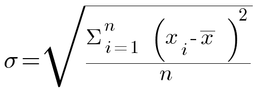

Kappale 14: Kotitehtävät
Kotitehtävä 1
Tarkastele tieviiva-aineistoa. Laske kullekkin tielle sen 50 metrin vyöhykkeen (buffer) pinta-ala uuteen sarakkeeseen.
Aineisto: tieviiva_lappi.gpkg
- Käytä
buffer()-funktiota. - Millä funktiolla voit laskea pinta-alan?
area(
buffer(
$geometry, 50
)
)Kotitehtävä 2
Tarkastele Helsingin alueen väestöruutuaineistoa. Hyödynnä lausekkeita ja laske asukasmäärän (asukkaita-kenttä) keskihajonta.
Aineisto: HSY_vaesto2022_muok.gpkg
- Millä funktiolla voit laskea sarakkeen keskihajonnan?
- Keskihajonnan voi laskea myös “käsin” matemaattisilla funktioilla. Tällöin voi rakentaa lausekkeen matemaattisista funktioista: 
x̄ on arvojen aritmeettinen keskiarvo, xi yksittäinen arvo ja n arvojen lukumäärä.
-- Matemaattisilla funktioilla:
sqrt(
( 1 / ( count(
"fid"
) - 1
)
)
*
(
sum(
( "asukkaita" - mean(
"asukkaita"
)
) ^2
)
)
)
-- Aggregate- ryhmän funktiolla:
stdev("asukkaita")Kotitehtävä 3 (haastava)
Luo hallintoalueaineistoon uusi attribuuttikenttä, jonka arvo vaihtelee sen mukaan sijaitseeko kullakin hallintoalueella Natura-alueita ja, jos sijaitsee, onko luonnonsuojelualueiden yhteinen pinta-ala yli 10 km².
Käytä seuraavaa logiikkaa: jos hallintoalueella
- on Natura-alueita yli 10km² > arvoksi hallintoalueella osuvien Natura-alueiden lukumäärä
- on Natura-alueita, mutta ei kuitenkaan yli 10km² > arvoksi hallintoalueella osuvien Natura-alueiden lukumäärä kerrottuna -1:llä
- ei ole Natura- alueita > arvoksi 0
Aineistot:
hallintoalueet.gpkgnatura_alueet.gpkg
Käytä CASE WHEN … rakennetta.
- Leikkaako (intersects) Natura-alue taso hallintoalue-tason. Helpointa käyttää
overlay_intersects()-funktiota. - JA onko pinta-ala yli 10 km² (huomioi yksikkö). Aggregoi Natura-alueiden geometriat ja laske niille pinta-ala.
- Käytä
aggregate()-funktiota. - Kerää (collect) Natura-alueet tasolta geometriat (
$geometry). - Suodata (filter) sen perusteella leikkaako tällä hetkellä käsiteltävän hallintoalueen geometria Natura-alueiden geometrioita
- Käytä
intersects()-funktiota. - Hae hallintoaluekohteen geometria
geometry()-funktiolla. - Voit viitata tällä hetkellä käsiteltävään hallintoaluekohteeseen
@parent-muuttujalla.
- Käytä
- Laske geometrioille pinta-ala
area()-funktiolla.
- Käytä
- Jos pinta-ala on yli 10 km²…
- Käytä jälleen
aggregate()-funktiota. - Laske kohteiden määrä (count). Käytä lausekkeena (expression) jotain natura_alueet-tason saraketta.
- Suodata (filter) samalla tavalla kuin aikaisemmassa vaiheessa.
- Käytä jälleen
- Toista sama toimenpide, mutta tarkista onko pinta-ala alle 10 km².
- Jos on, kerro Natura-alueiden lukumäärä -1:llä.
- Jos kumpikaan ehto ei toteudu (ELSE), aseta arvoksi 0.
CASE
WHEN
...
AND
...
THEN
...
WHEN
...
AND
...
THEN
...
ELSE 0
ENDCASE
WHEN
overlay_intersects(
'natura_alueet'
) = True
AND
area(
aggregate(
layer:='natura_alueet', aggregate:='collect', expression:=$geometry, filter:=intersects(
geometry(
@parent
), $geometry
)
)
) >= 10000000
THEN
aggregate(
layer:='natura_alueet', aggregate:='count', expression:="Status", filter:=intersects(
geometry(
@parent
), $geometry
)
)
WHEN
overlay_intersects(
'natura_alueet') = True
AND
area(
aggregate(
layer:='natura_alueet', aggregate:='collect', expression:=$geometry, filter:=intersects(
geometry(
@parent
), $geometry
)
)
) < 10000000
THEN
-1 * ( aggregate(
layer:='natura_alueet', aggregate:='count', expression:="Status", filter:=intersects(
geometry(
@parent
), $geometry
)
)
)
ELSE 0
ENDKotitehtävä 4
Tarkastele globaalia aineistoa paikoista, joissa on asutusta. Luokittele kohteet sen mukaan, mikä on ko. paikassa vallitsevan aikavyöhykkeen (TIMEZONE- kenttä) ensimmäinen osamääritelmä (ennen ensimmäistä /-merkkiä).
Aineisto: pop_places.gpkg
Samaan tulokseen pääsee (ainakin) kahdella tavalla:
- Vaihtoehto 1:
- Käytä
substr()-funktiota. Funktio “leikkaa” merkkijonosta palasen annetun merkkivälin perusteella. - Hae
strpos()-funktiolla/-symbolin paikka käytä sitäsubstr()-funktiossa merkkivälin loppuna.
- Käytä
- Vaihtoehto 2:
- Käytä
regexp_substr()-funktiota. Funktioon tulee syöttää merkkijono ja Regex (Regular Expression) -lauseke.
- Käytä
-- Vaihtoehto 1
substr(
"TIMEZONE", 0, strpos(
"TIMEZONE", '/'
) -1
)
-- Vaihtoehto 2
regexp_substr(
"TIMEZONE", '(.*?)/'
)Kotitehtävä 5
Luo duplikaatti hallintoalue-aineistosta. Tehtävässä 5.2 selvitimme hallintoalueiden (tai niiden alijoukon) asukasmäärät ja tallensimme ne asukkaita-nimiseen attribuuttikenttään. Luokittele sekä hallintoalue-karttataso että siitä luotu duplikaattitaso porrastusperusteisesti Equal Count (Quantile) -menetelmällä ja samalla väriskaalalla: ensimmäinen asukkaita- kentän arvojen perusteella ja toinen sellaisten arvojen perusteella, jotka saadaan kun asukkaita-kentän arvo suhteutetaan hallintoaluepolygonin pinta-alaan (km²). Mitä havaitset?
Aineisto: hallintoalueet.gpkg
Millä funktiolla saat palautettua kohteen pinta-alan?
-- area()- funktiolla
"asukkaita" / (area(
$geometry
) / 1000000.0)
-- suoraviivaisemmin $area- funktiolla
"asukkaita" / ($area / 1000000.0)